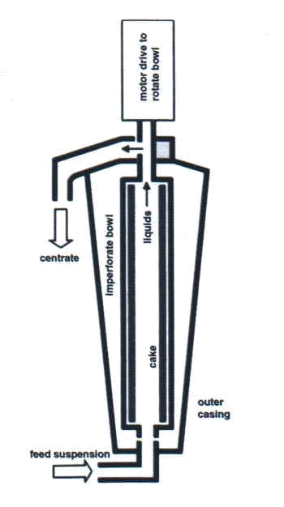
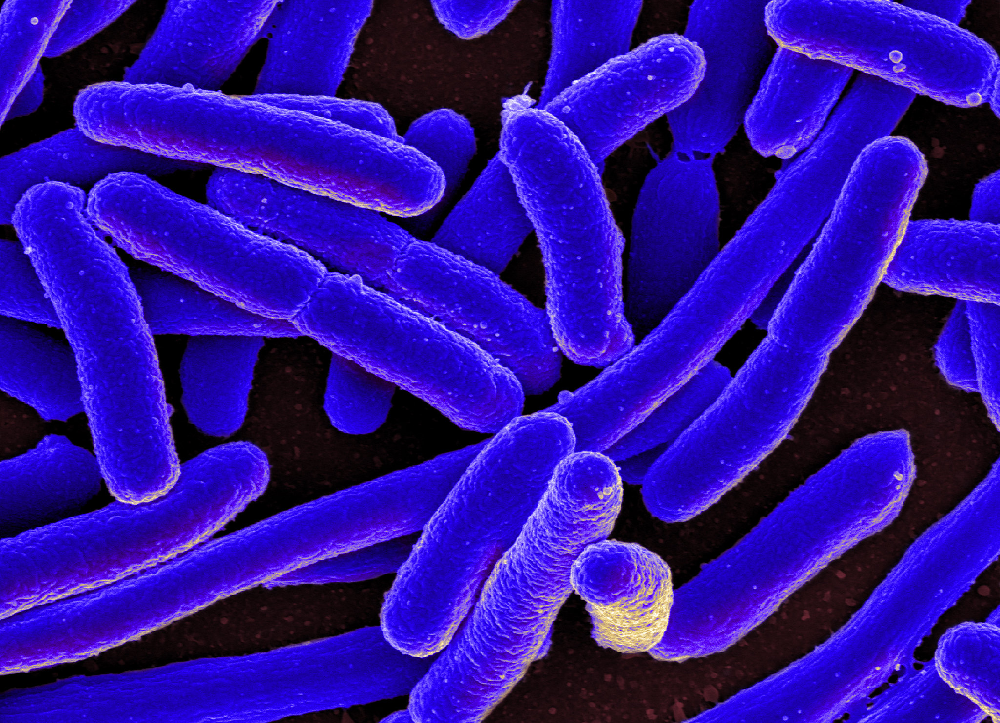
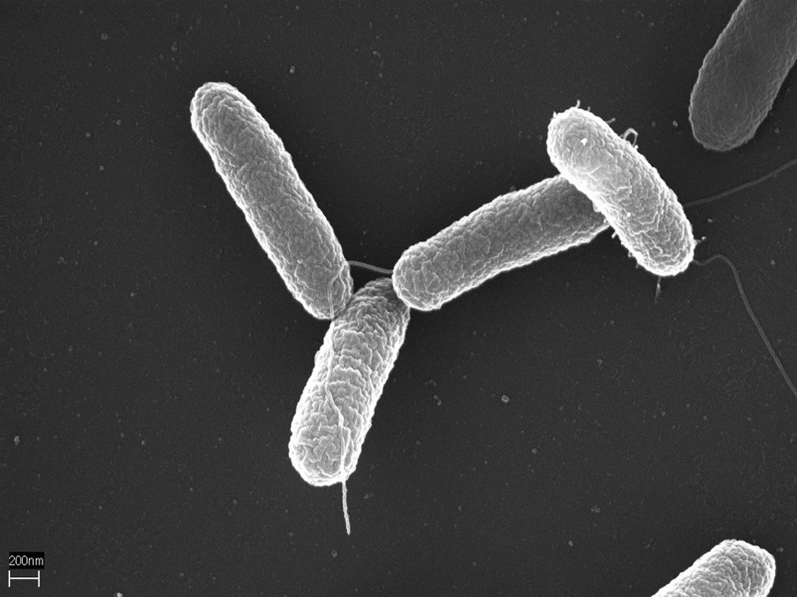

Selección y Parámetros
Propiedades de la Centrifuga (Fijas)
Radio Externo (R0): 0.022 m
Radio Interno (R1): 0.011 m
Longitud (L): 0.20 m
Velocidad (N): 15000 RPM
Viscosidad Caldo (mu): 1.25 cP
Densidad Caldo (rho_l): 1.00 g/cm³
Propiedades Físicas de la Bacteria
Esquema del Equipo

Microorganismos
E. coli

Salmonella

Resultados de Simulación
1. Velocidad Terminal
m/s
2. Caudal Crítico
L/h
3. Caudal al 50% de Separación
L/h
4. Relación de Flujos
5. Caudal para Separación Completa
L/h